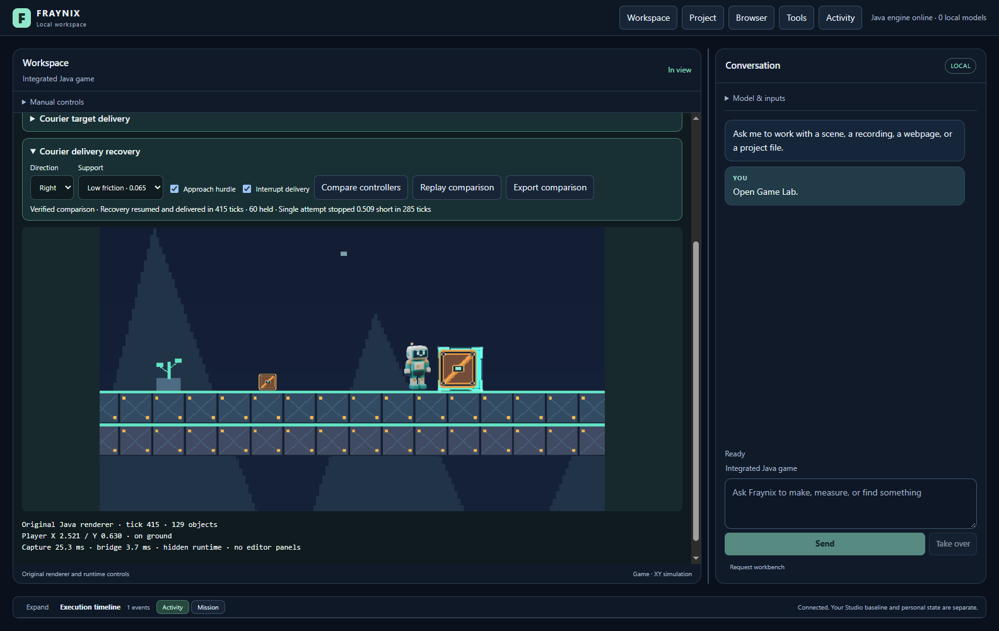
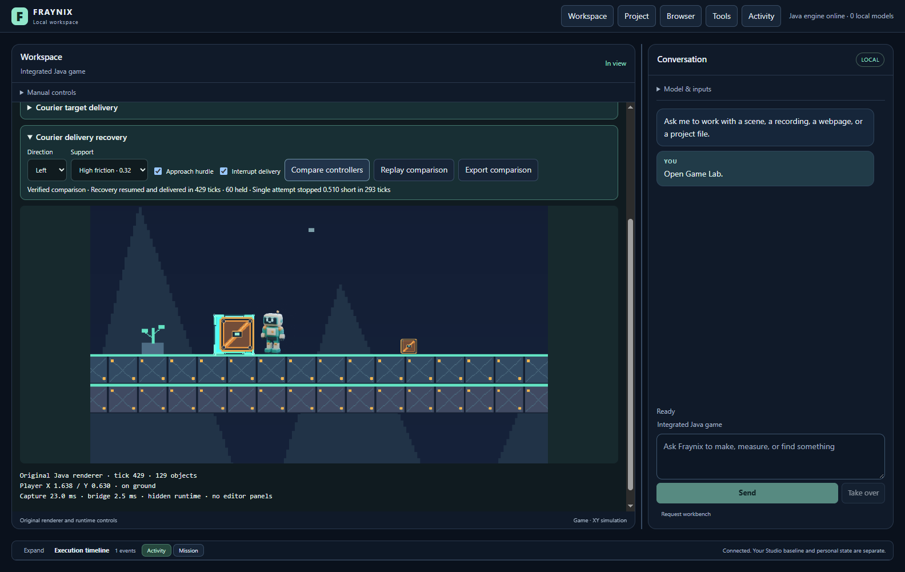
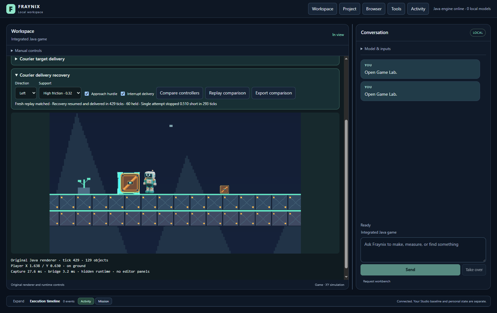

Recover an interrupted Courier delivery
Open Game Lab and choose Courier delivery recovery. Compare both controllers on the same fixture and inspect the measured replay.

The Courier delivers after crossing a hurdle on the low-friction deck

A leftward delivery with a hurdle and interruption on the high-friction deck

Game Lab reproduces both runs of the high-friction comparison after restarting offline
System files
Open source